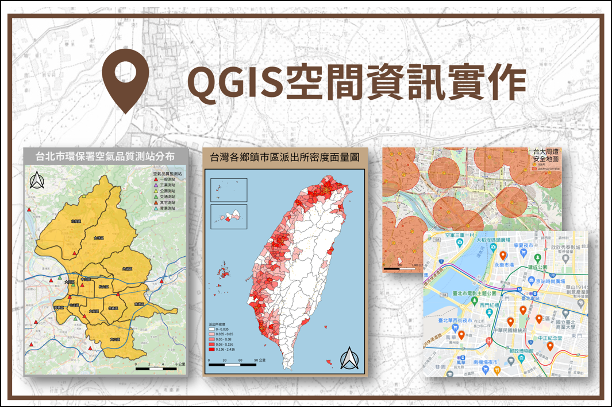

QGIS空間資訊實作：數位人文概論
*QGIS三小時入門課程與實作
相關連結：
- 課程投影片下載
- 圖資下載
-
QGIS實作①：點線面資料初探、空間視覺化、地圖輸出
課程影片 -
QGIS實作②：面量圖繪製、匯入Shapefile與CSV點、空間與屬性欄位運算、主題地圖
課程影片 -
QGIS實作③：環域分析、Google我的地圖、台灣百年歷史地圖WMTS服務
課程影片
109-2學期及110-2學期受邀至台大圖資系開設「數位人文概論」課程，教導如何處理空間資料即進行視覺化。
因此設計三小時的課程及實作，主題為 QGIS 入門操作，提供想學習 QGIS 軟體一個建議的實作範例，並透過投影片及影片的方式一步步教學。
分成三大主題：① 點線面資料初探、空間視覺化、地圖輸出；②：面量圖繪製、匯入Shapefile與CSV點、空間與屬性欄位運算、主題地圖；③：環域分析、Google我的地圖、台灣百年歷史地圖WMTS服務。以下為實作的預期成果地圖。